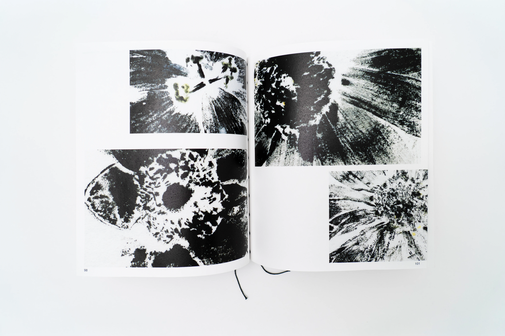
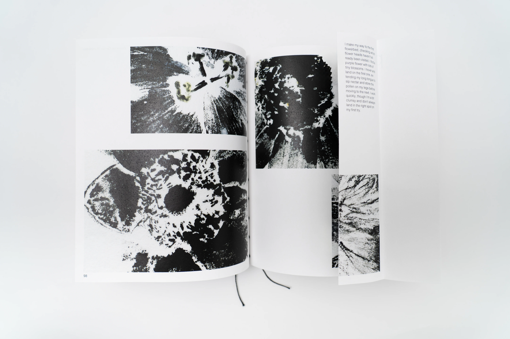
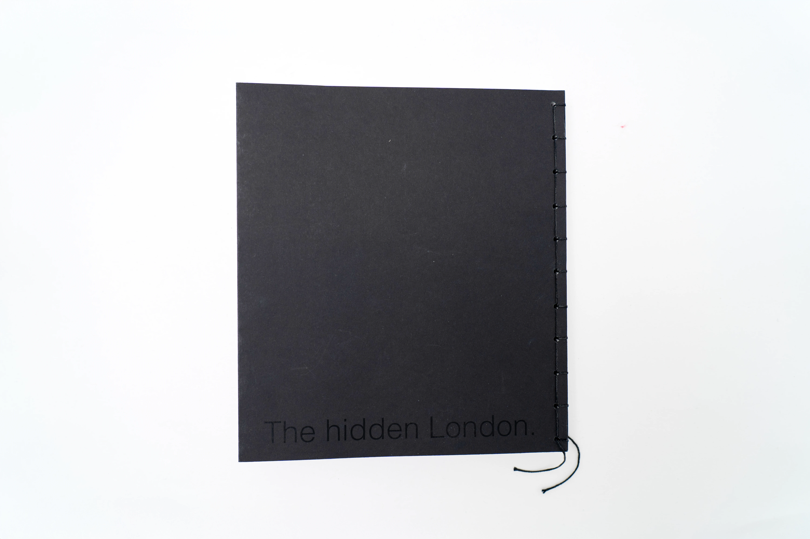
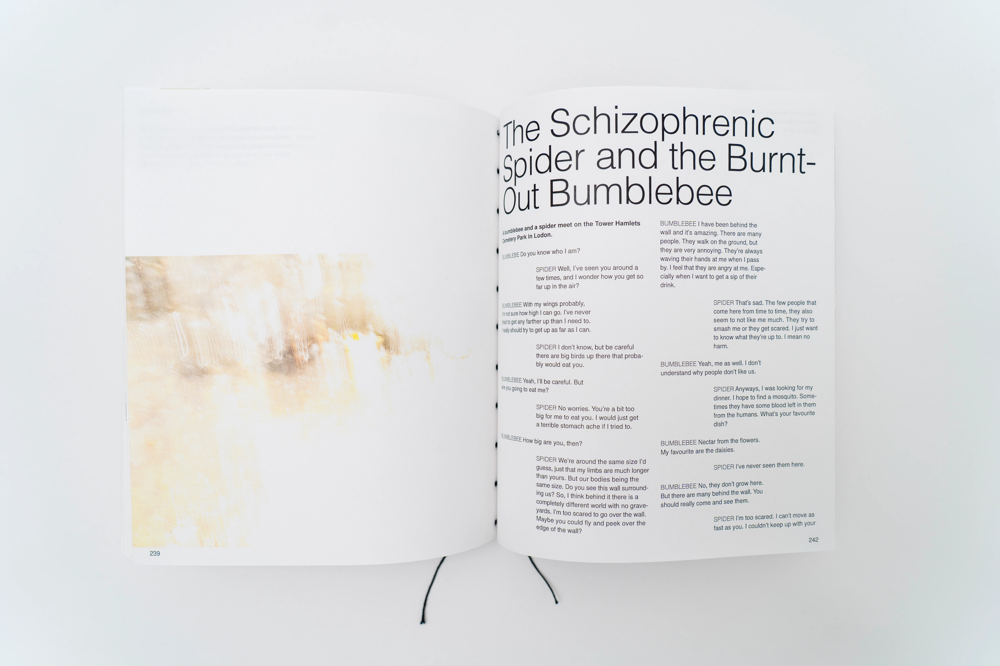
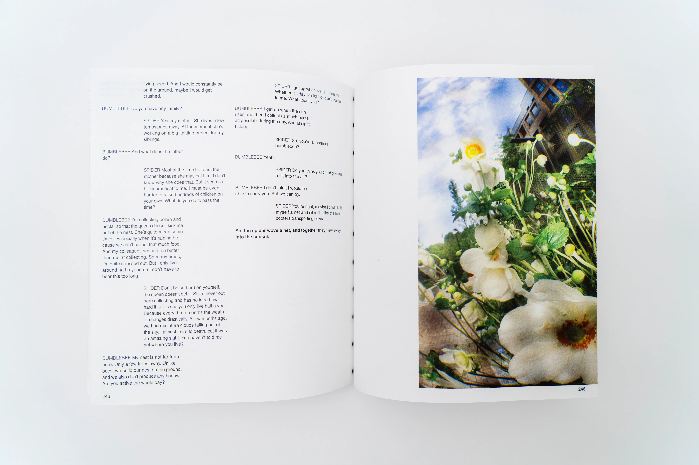
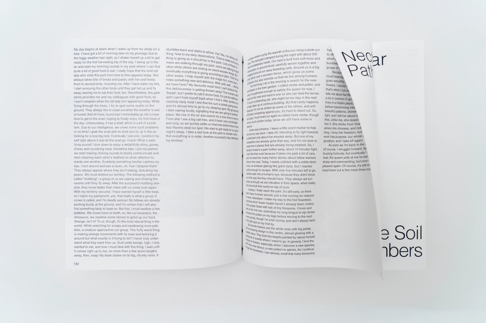
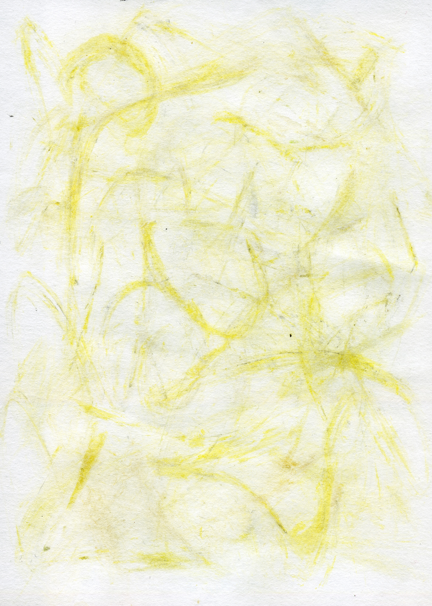

Unseen
What lies hidden in a large city reveals itself only to the careful eye. Between walls, streets and shadows, another world lives, concealed yet present. This journey of discovery leads to the wild animals of the city. Only when opening and unfolding the inner pages does one learn who the narratives are about. Inserted flaps with additional information draw the reader deeper in. Where do they live? What is their day like? How do they perceive our world?






Picture series
I (Bumblebee) make my way to the first flowerbed, checking which flower heads haven’t already been visited. I hover and land on the first one, extending my long tongue to sip nectar and store the pollen on my legs before moving to the next.
Sensory, View of the animal
The Common Carder Bumblebee is led by the scent of pollen and nectar, flying from bloom to bloom, creating a zigzag path.
The Common Carder Bumblebee sees through large compound eyes on either side of its head, giving a 300° view, and perceiving UV, blue, and green to find flowers.

Project
2025, 7 weeks,
Photography, Editorialdesign, Bookbinding
<
>